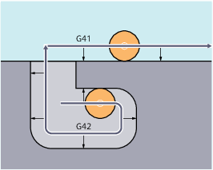
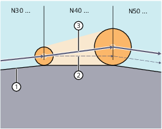

Für die Berechnung der Werkzeugwege benötigt die Steuerung folgende Informationen:
Information | Bedeutung |
|---|---|
Werkzeugnr. (T...), Schneidennr. (D...) | Zur Berechnung des Abstandes zwischen Werkzeugbahn und Werkstückkontur. |
Bearbeitungsrichtung (G41/G42) | Zur Ermittlung der Richtung, in die die Werkzeugbahn verschoben werden soll. |
Arbeitsebene (G17/G18/G19) | Zur Ermittlung der Ebene und damit der Achsrichtungen, in denen korrigiert werden soll. |
Daher muss spätestens im Programmsatz mit der WRK-Anwahl ein Werkzeug eingewechselt (T-Funktion) und die WZ-Schneide/WZK (D1 ... D9) aktiviert werden.
Ein negativer Korrekturwert ist gleichbedeutend mit einem Wechsel der Korrekturseite (G41 ↔ G42).
Der bei Werkzeuganwahl der Durchmesserachse zugeordnete Verschleißparameter kann über ein Maschinendatum als Durchmesserwert definiert werden. Bei einem nachfolgenden Ebenenwechsel wird diese Zuordnung nicht automatisch verändert. Dafür muss das Werkzeug nach Ebenenwechsel neu angewählt werden.
Ein Wechsel der Korrekturrichtung (G41 ↔ G42) kann ohne zwischengeschaltetes G40 programmiert werden.
Ein Wechsel der Arbeitsebene (G17/G18/G19) ist bei aktivem G41/G42 nicht möglich.
Der Werkzeugkorrekturdatensatz kann im Korrekturbetrieb gewechselt werden.
Ein veränderter Werkzeugradius gilt bereits ab dem Satz, in dem die neue D-Nummer steht.
| Hinweis |
Die Radiusänderung bzw. Ausgleichsbewegung erstreckt sich über den gesamten Satz und erreicht erst im programmierten Endpunkt den neuen äquidistanten Abstand. |
Bei Linearbewegungen fährt das Werkzeug auf einer schräg liegenden Bahn zwischen Anfangs- und Endpunkt:
① | Programmierte Kontur |
② | Werkzeugbahn ohne Wechsel des Werkzeugkorrekturdatensatzes im aktiven Satz |
③ | Werkzeugbahn bei einem Wechsel des Werkzeugkorrekturdatensatzes im aktiven Satz und einer damit verbundenen Änderung des Werkzeugradius |
Bei Kreisinterpolationen entstehen Spiralbewegungen.
Die Änderung kann z. B. über Systemvariablen erfolgen. Für den Ablauf gilt das Gleiche wie beim Wechsel des Werkzeugkorrekturdatensatzes (D…).
| Hinweis |
Die geänderten Werte werden erst nach erneuter T- oder D-Programmierung wirksam. Die Änderung gilt erst im nächsten Satz. |
Der Korrekturbetrieb darf nur von einer bestimmten Anzahl aufeinanderfolgender Sätze oder M-Befehle unterbrochen werden, die keine Fahrbefehle bzw. Wegangaben in der Korrekturebene enthalten.
| Hinweis |
Die maximale Anzahl aufeinander folgender Unterbrechungssätze oder M-Befehle ist über ein Maschinendatum einstellbar. Ein Satz mit Bahnweg Null zählt ebenfalls als Unterbrechung. |
Das Verhalten der 2D-Werkzeugradiuskorrektur in bestimmten Bearbeitungssituationen ist über folgende Settingdaten einstellbar:
SD42490 $SC_CUTCOM_G40_STOPRE (Abfahrverhalten bei einem Vorlaufstopp vor Abwahl der Werkzeugradiuskorrektur)
SD42496 $SC_CUTCOM_CLSD_CONT (Verhalten der Werkzeugradiuskorrektur bei geschlossener Kontur)
Details siehe Listenhandbuch Maschinendaten und Parameter.